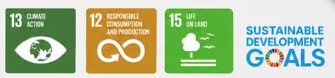

<!doctype html>
<html lang="en">
<head>
<meta charset="utf-8">
<meta name="viewport" content="width=device-width, initial-scale=1">
<meta name="robots" content="noindex">
<title>WasteQuest Booklet</title>
<link href="https://fonts.googleapis.com/css2?family=Baloo+2:wght@500;700;800&family=Nunito:wght@400;600;700;800&display=swap" rel="stylesheet">
<link rel="stylesheet" href="css/app.css">
<style>
@page{size:A4;margin:14mm 14mm 16mm}
body{background:#fff;font-size:10.5pt;line-height:1.45}
main{max-width:182mm;padding:0}
.bk-sec{break-before:page}
.bk-sec>h1{font-size:24pt;color:var(--grass-d);border-bottom:4px solid var(--grass);padding-bottom:4px;margin:0 0 10px}
.bk-cover{height:262mm;display:flex;flex-direction:column;justify-content:space-between;background:linear-gradient(160deg,#bfe9ff,#e9f8ff 55%,#eafbe4);border-radius:18px;padding:16mm 14mm;break-after:page}
.bk-cover h1{font-size:44pt;line-height:1;margin:6mm 0 2mm}
.bk-cover h1 b{color:var(--grass-d)}
.bk-cover .sub{font-family:"Baloo 2";font-size:18pt;color:var(--ink)}
.bk-cover .mascot{width:42mm;animation:none}
.bk-cover .auth{font-size:10pt}
.bk-cover img.logos{height:16mm;border-radius:6px;background:#fff;padding:2mm}
.bk-cover img.sdg{height:14mm}
.bk-toc li{font-family:"Baloo 2";font-size:14pt;margin:3mm 0}
.bk-games{display:grid;grid-template-columns:1fr 1fr;gap:4mm}
.bk-game{border:1px solid var(--line);border-radius:10px;padding:3mm;display:flex;gap:3mm;align-items:center;break-inside:avoid}
.bk-game .gi{font-size:22pt}
.bk-game h3{font-size:12pt}
.bk-game p{margin:0;font-size:9pt;color:var(--muted)}
.bk-qr{flex:none;width:22mm;height:22mm}
.bk-qr img,.bk-qr canvas{width:22mm!important;height:22mm!important}
.bk-lab{break-before:page}
.bk-q{break-inside:avoid;margin:0 0 2.2mm;font-size:8.6pt}
.bk-qs{columns:2;column-gap:7mm}
.bk-q b{font-family:"Baloo 2"}
.bk-q .ans{color:var(--grass-d);font-weight:800}
.card{box-shadow:none;border:1px solid var(--line)}
a{color:inherit;text-decoration:none}
@media screen{body{background:#e9eef3}main{background:#fff;margin:20px auto;padding:14mm;box-shadow:var(--shadow)}}
</style>
</head>
<body>
<main id="bk"></main>
<div id="toastbox" hidden></div>
<script src="js/core.js"></script>
<script src="js/data/questions.js"></script>
<script src="js/games/sort.js"></script>
<script src="js/games/match.js"></script>
<script src="js/games/words.js"></script>
<script src="js/games/myth.js"></script>
<script src="js/games/quiz.js"></script>
<script src="js/sims/ph.js"></script>
<script src="js/sims/compost.js"></script>
<script src="js/sims/enzyme.js"></script>
<script src="js/sims/cash.js"></script>
<script src="js/sims/footprint.js"></script>
<script src="js/labs.js"></script>
<script src="js/learn.js"></script>
<script src="js/teacher.js"></script>
<script src="js/class.js"></script>
<script src="js/cert.js"></script>
<script src="https://cdnjs.cloudflare.com/ajax/libs/qrcodejs/1.0.0/qrcode.min.js"></script>
<script>
(() => {
  const SITE = "https://wastequest.github.io/";
  WQ.lang = new URLSearchParams(location.search).get("lang") === "bm" ? "bm" : "en";
  WQ.aud = "teacher";
  document.documentElement.lang = WQ.lang === "bm" ? "ms" : "en";
  const t = WQ.t, el = document.getElementById("bk");
  const L = {
    sub:{en:"Waste-to-Wealth (W2W) Educational Module",bm:"Modul Pendidikan Sisa kepada Kekayaan (W2W)"},
    tag:{en:"Interactive website · Games & virtual labs · 10 hands-on activities · Class quiz · Micro-credential",bm:"Laman web interaktif · Permainan & makmal maya · 10 aktiviti amali · Kuiz kelas · Mikro-kredensial"},
    by:{en:"Prepared by",bm:"Disediakan oleh"}, ed:{en:"Facilitator booklet · 2026 edition",bm:"Buku panduan fasilitator · Edisi 2026"},
    open:{en:"Open the website",bm:"Buka laman web"},
    toc:{en:"Contents",bm:"Kandungan"},
    s:[{en:"About WasteQuest",bm:"Tentang WasteQuest"},{en:"Learn: Waste-to-Wealth",bm:"Belajar: Sisa kepada Kekayaan"},{en:"Games & Simulations",bm:"Permainan & Simulasi"},
       {en:"Hands-on Labs",bm:"Makmal Amali"},{en:"Teacher Guide & Micro-credential",bm:"Panduan Guru & Mikro-kredensial"},{en:"Appendix: Question Bank & Answers",bm:"Lampiran: Bank Soalan & Jawapan"}],
    about:{en:`<p>WasteQuest turns the journey of waste, from the bin to a valuable new product, into a quest. Learners play games, run virtual science labs, make real products from waste in hands-on activities, compete in live class quizzes and earn badges and a certificate.</p>
      <p>It serves four groups: <b>children 7–12</b>, <b>teenagers 13–17</b>, <b>adults</b> (university, community and ESG training) and <b>teachers/facilitators</b>. Every page is available in English and Bahasa Melayu and works on phones, tablets and classroom projectors, online or as a single offline file.</p>`,
      bm:`<p>WasteQuest menjadikan perjalanan sisa, daripada tong sampah hingga menjadi produk baharu yang bernilai, sebagai satu misi. Pelajar bermain permainan, menjalankan makmal sains maya, menghasilkan produk sebenar daripada sisa melalui aktiviti amali, bertanding dalam kuiz kelas secara langsung dan memperoleh lencana serta sijil.</p>
      <p>Ia untuk empat kumpulan: <b>kanak-kanak 7–12</b>, <b>remaja 13–17</b>, <b>dewasa</b> (universiti, komuniti dan latihan ESG) serta <b>guru/fasilitator</b>. Setiap halaman tersedia dalam Bahasa Inggeris dan Bahasa Melayu dan berfungsi pada telefon, tablet dan projektor kelas, dalam talian atau sebagai satu fail luar talian.</p>`},
    how:{en:"How to use the website",bm:"Cara menggunakan laman web"},
    howT:{en:`<table class="tbl"><tr><th>Section</th><th>What learners do</th></tr>
      <tr><td>📘 Learn</td><td>Seven short interactive chapters with quick checks.</td></tr>
      <tr><td>🎮 Games & Simulations</td><td>Sorting, matching, puzzles, quizzes and five virtual labs. Each earns a badge.</td></tr>
      <tr><td>🧪 Hands-on Labs</td><td>Ten step-by-step activities with materials, safety notes, science, videos and printable worksheets.</td></tr>
      <tr><td>📱 Class Battle</td><td>The teacher hosts a live quiz on the projector; students join with a code on their phones. Team mode works without phones.</td></tr>
      <tr><td>🏅 Certificate</td><td>Three tracks: Junior Eco-Hero, Zero-Waste Champion and Waste-to-Wealth Practitioner (proposed micro-credential).</td></tr>
      <tr><td>🧑‍🏫 Teacher Hub</td><td>Session plans, micro-credential framework, rubrics and safety guidance.</td></tr></table>`,
      bm:`<table class="tbl"><tr><th>Bahagian</th><th>Apa yang pelajar lakukan</th></tr>
      <tr><td>📘 Belajar</td><td>Tujuh bab interaktif ringkas dengan semakan pantas.</td></tr>
      <tr><td>🎮 Permainan & Simulasi</td><td>Mengasing, memadan, teka-teki, kuiz dan lima makmal maya. Setiap satu memberi lencana.</td></tr>
      <tr><td>🧪 Makmal Amali</td><td>Sepuluh aktiviti langkah demi langkah dengan bahan, nota keselamatan, sains, video dan lembaran kerja boleh cetak.</td></tr>
      <tr><td>📱 Pertandingan Kelas</td><td>Guru menganjurkan kuiz langsung di projektor; murid menyertai dengan kod di telefon. Mod pasukan berfungsi tanpa telefon.</td></tr>
      <tr><td>🏅 Sijil</td><td>Tiga laluan: Wira Eko Junior, Juara Sifar Sisa dan Pengamal Sisa kepada Kekayaan (cadangan mikro-kredensial).</td></tr>
      <tr><td>🧑‍🏫 Hab Guru</td><td>Rancangan sesi, rangka kerja mikro-kredensial, rubrik dan panduan keselamatan.</td></tr></table>`},
    scan:{en:"Scan a code to open that game directly.",bm:"Imbas kod untuk membuka permainan itu terus."},
    games:{en:"Games",bm:"Permainan"}, sims:{en:"Simulations",bm:"Simulasi"},
    missing:{en:"Section not available yet.",bm:"Bahagian belum tersedia."},
    ans:{en:"Answer",bm:"Jawapan"}
  };
  const authors = "Wan Azlina Wan Ab Karim Ghani, Shafreeza Sobri, Izzudin Ismail, Nur Syakina Jamali, Mohd Faiz Gunam Rasul, Salmiaton Ali";
  const sec = (n, inner) => `<section class="bk-sec"><h1>${n + 1}. ${t(L.s[n])}</h1>${inner}</section>`;
  const games = Object.values(WQ.games).sort((a, b) => a.order - b.order);
  const gameCard = g => `<div class="bk-game"><div class="bk-qr" data-qr="${SITE}#/game/${g.id}"></div><div><span class="gi">${g.icon}</span><h3>${WQ.esc(t(g.title))}</h3><p>${WQ.esc(t(g.desc))} · ${g.ages || "7+"}</p></div></div>`;
  const tracks = { kids: "K", teens: "T", adults: "A" };

  let html = `<section class="bk-cover">
    <div><h1>Waste<b>Quest</b></h1><div class="sub">${t(L.sub)}</div><p>${t(L.tag)}</p></div>
    <div class="row" style="align-items:flex-end;justify-content:space-between">${WQ.MASCOT}<div style="text-align:center"><div class="bk-qr" style="width:34mm;height:34mm" data-qr="${SITE}"></div><div class="small"><b>${t(L.open)}</b><br>${SITE.replace("https://", "")}</div></div></div>
    <div><p class="auth"><b>${t(L.by)}:</b> ${authors}<br>Fakulti Kejuruteraan, Universiti Putra Malaysia</p><p class="small muted">${t(L.ed)}</p></div></section>
    <section><h1 style="font-size:24pt">${t(L.toc)}</h1><ol class="bk-toc">${L.s.map(s => `<li>${t(s)}</li>`).join("")}</ol></section>`;

  html += sec(0, t(L.about) + `<h2 class="section-t">${t(L.how)}</h2>` + t(L.howT));
  html += sec(1, `<div id="bkLearn"></div>`);
  html += sec(2, `<p>${t(L.scan)}</p><h2 class="section-t">${t(L.games)}</h2><div class="bk-games">${games.filter(g => g.kind === "game").map(gameCard).join("")}</div>
    <h2 class="section-t">${t(L.sims)}</h2><div class="bk-games">${games.filter(g => g.kind === "sim").map(gameCard).join("")}</div>`);
  html += sec(3, `<div id="bkLabs"></div>`);
  html += sec(4, `<div id="bkTeacher"></div>`);
  html += sec(5, `<div class="bk-qs">${WQ.questions.map((q, i) => `<div class="bk-q"><b>${i + 1}.</b> [${q.tracks.map(x => tracks[x]).join("")}] ${WQ.esc(t(q.q))}<br>${q.a.map((a, j) => `<span class="${j === q.c ? "ans" : ""}">${"ABCD"[j]}. ${WQ.esc(t(a))}</span>`).join(" &nbsp; ")}</div>`).join("")}</div>
    <p class="small muted">K = kids · T = teens · A = adults</p>`);
  el.innerHTML = html;

  const fill = (id, fn) => { const box = document.getElementById(id); try { if (fn) fn(box); else box.innerHTML = `<p class="todo">${t(L.missing)}</p>`; } catch (e) { box.innerHTML = `<p class="todo">${t(L.missing)} (${WQ.esc(e.message)})</p>`; } };
  fill("bkLearn", WQ.renderLearnPrint);
  fill("bkTeacher", WQ.renderTeacherPrint);
  fill("bkLabs", WQ.renderLabPrint && (box => WQ.labs.forEach((lab, i) => { const d = document.createElement("div"); if (i) d.className = "bk-lab"; box.appendChild(d); WQ.renderLabPrint(d, lab.id); })));
  if (window.QRCode) document.querySelectorAll("[data-qr]").forEach(q => new QRCode(q, { text: q.dataset.qr, width: 256, height: 256, correctLevel: QRCode.CorrectLevel.M }));
})();
</script>
</body>
</html>
